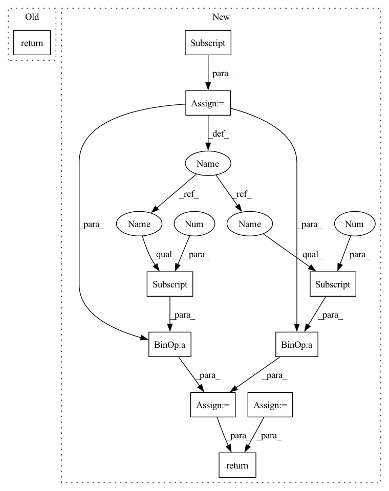

Pattern ID :24344

Before Change
else:
f_group[i] = np.array([-1, 0, 1])
return f_group
After Change
fc = mesh.fc
f_group = np.zeros([len(fn), 3])
e_strength = np.zeros([len(fn), 3])
for i, f in enumerate(f2ring):
ci = fc[i].reshape(1, -1)
cj = fc[f]
nj = fn[f]
(a cross b) cross a = (a dot a)b - (b dot a)a
a_a = np.sum((cj - ci) ** 2, 1).reshape(-1, 1)
b_a = np.sum((cj - ci) * nj, 1).reshape(-1, 1)
wj = a_a * nj - b_a * (cj - ci)
wj = normalize(wj, norm="l2", axis=1)
nw = np.sum(nj * wj, 1).reshape(-1, 1)
nj_prime = 2 * nw * wj - nj
am = np.max(fa[f]) + 1.0e-12
aj = fa[f]
cji_norm = np.linalg.norm(cj - ci, axis=1)
sigma = np.mean(cji_norm) + 1.0e-12
mu = (aj / am * np.exp(-cji_norm / sigma)).reshape(-1, 1)
Ti = np.matmul(nj_prime.T, (nj_prime * mu))
order = np.argsort(np.linalg.eig(Ti)[0])[::-1]
e_vals = np.linalg.eig(Ti)[0][order]
e_vecs = np.linalg.eig(Ti)[1][:, order]
n_ave = np.sum(mu * nj_prime, 0)
delta = 0.5
alpha = beta = 0.9
edge_strength = (e_vals[1] - e_vals[2]) / (e_vals[0] + 1.0e-12)
if edge_strength < 0.01:
edge_strength = 0.0
else:
edge_strength = 1.0
if np.dot(n_ave, e_vecs[0]) < delta:
edge_strength = 1.0
elif e_vals[2] > alpha * (e_vals[0] - e_vals[1]) and e_vals[2] > beta * (e_vals[1] - e_vals[2]):
edge_strength = 1.0
else:
edge_strength = (e_vals[1] - e_vals[2]) / (e_vals[0] + 1.0e-12)
e_strength[i] = np.array([-1.0, -1.0, edge_strength])
if len(e_vals) != 3:
print("len(e_vals) < 3 !")
elif e_vals[1] < 0.01 and e_vals[2] < 0.001:
f_group[i] = np.array([-1, -1, 1])
elif e_vals[1] > 0.01 and e_vals[2] < 0.1:
f_group[i] = np.array([0, 1, -1])
elif e_vals[2] > 0.1:
f_group[i] = np.array([-1, 1, -1])
else:
f_group[i] = np.array([-1, 0, 1])
return f_group, e_strength
In pattern: SUPERPATTERN
Frequency: 3
Non-data size: 10
Instances
Fragment ID: 75660007
Project Name: astaka-pe/dual-dmp
Commit Name: e1c9b43d2c41c2bbc441685458713ed3bb9800db
Time: 2021-09-20
Author: astaka1119@g.ecc.u-tokyo.ac.jp
File Name: util/models.py
M Class Name: AnonimousClass
N Class Name: AnonimousClass
M Method Name: compute_nvt(1)
N Method Name: compute_nvt(1)
M Parent Class:
N Parent Class:
M File Name: util/models.py
N File Name: util/models.py
M Start Line: 160
M End Line: 193
N Start Line: 157
N End Line: 215
'>
Before Change
else:
f_group[i] = np.array([-1, 0, 1])
return f_group
After Change
fc = mesh.fc
f_group = np.zeros([len(fn), 3])
e_strength = np.zeros([len(fn), 3])
for i, f in enumerate(f2ring):
ci = fc[i].reshape(1, -1)
cj = fc[f]
nj = fn[f]
(a cross b) cross a = (a dot a)b - (b dot a)a
a_a = np.sum((cj - ci) ** 2, 1).reshape(-1, 1)
b_a = np.sum((cj - ci) * nj, 1).reshape(-1, 1)
wj = a_a * nj - b_a * (cj - ci)
wj = normalize(wj, norm="l2", axis=1)
nw = np.sum(nj * wj, 1).reshape(-1, 1)
nj_prime = 2 * nw * wj - nj
am = np.max(fa[f]) + 1.0e-12
aj = fa[f]
cji_norm = np.linalg.norm(cj - ci, axis=1)
sigma = np.mean(cji_norm) + 1.0e-12
mu = (aj / am * np.exp(-cji_norm / sigma)).reshape(-1, 1)
Ti = np.matmul(nj_prime.T, (nj_prime * mu))
order = np.argsort(np.linalg.eig(Ti)[0])[::-1]
e_vals = np.linalg.eig(Ti)[0][order]
e_vecs = np.linalg.eig(Ti)[1][:, order]
n_ave = np.sum(mu * nj_prime, 0)
delta = 0.5
alpha = beta = 0.9
edge_strength = (e_vals[1] - e_vals[2]) / (e_vals[0] + 1.0e-12)
if edge_strength < 0.01:
edge_strength = 0.0
else:
edge_strength = 1.0
if np.dot(n_ave, e_vecs[0]) < delta:
edge_strength = 1.0
elif e_vals[2] > alpha * (e_vals[0] - e_vals[1]) and e_vals[2] > beta * (e_vals[1] - e_vals[2]):
edge_strength = 1.0
else:
edge_strength = (e_vals[1] - e_vals[2]) / (e_vals[0] + 1.0e-12)
e_strength[i] = np.array([-1.0, -1.0, edge_strength])
if len(e_vals) != 3:
print("len(e_vals) < 3 !")
elif e_vals[1] < 0.01 and e_vals[2] < 0.001:
f_group[i] = np.array([-1, -1, 1])
elif e_vals[1] > 0.01 and e_vals[2] < 0.1:
f_group[i] = np.array([0, 1, -1])
elif e_vals[2] > 0.1:
f_group[i] = np.array([-1, 1, -1])
else:
f_group[i] = np.array([-1, 0, 1])
return f_group, e_strength
'>
Fragment ID: 75660010
Project Name: astaka-pe/dual-dmp
Commit Name: e1c9b43d2c41c2bbc441685458713ed3bb9800db
Time: 2021-09-20
Author: astaka1119@g.ecc.u-tokyo.ac.jp
File Name: util/models.py
M Class Name: AnonimousClass
N Class Name: AnonimousClass
M Method Name: compute_nvt(1)
N Method Name: compute_nvt(1)
M Parent Class:
N Parent Class:
M File Name: util/models.py
N File Name: util/models.py
M Start Line: 160
M End Line: 193
N Start Line: 157
N End Line: 215
'>
Before Change
keep = torchvision.ops.nms(boxes, scores, NMS_THRESHOLD)
landms = landms[keep]
boxes = boxes[keep]
scores = scores[keep]
return boxes, landms, scores
def forward(self, loc, conf, landms):
return self.postprocess(loc, conf, landms)
After Change
人脸检测后处理部分只能batch_size为1
priors = self.prior_data
variances = self.cfg["variance"]
// decode boxes
loc = loc.reshape((43008, 4))
boxes = torch.cat((
priors[:, :2] + loc[:, :2] * variances[0] * priors[:, 2:],
priors[:, 2:] * torch.exp(loc[:, 2:] * variances[1])), 1)
tempA = boxes[:, 0:2]
tempB = boxes[:, 2:4]
boxes = torch.cat((tempA - tempB/2, tempA + tempB/2), 1)
conf = conf.reshape((43008, 2))
scores = conf[:, 1]
return boxes.reshape(1, 43008, 1, 4), scores.reshape(1, 43008, 1)
def test(self, boxes, scores):
boxes = boxes.unsqueeze(0)
'>
Fragment ID: 75660011
Project Name: lihaoxiang1989/tensorrt-cv
Commit Name: defa136eb68db8c102bf6fd06339776e0a40d83e
Time: 2021-06-27
Author: hxl.colin@gmail.com
File Name: Retinaface/main.py
M Class Name: MyModel
N Class Name: MyModel
M Method Name: postprocess(3)
N Method Name: postprocess(5)
M Parent Class: nn.Module
N Parent Class: nn.Module
M File Name: Retinaface/main.py
N File Name: Retinaface/main.py
M Start Line: 207
M End Line: 252
N Start Line: 227
N End Line: 242